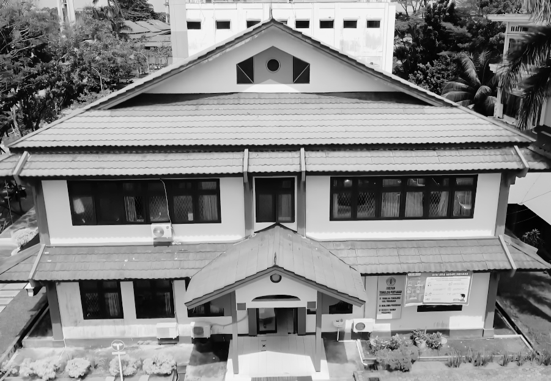

<!DOCTYPE html>
<html lang="id">
<head>
<meta charset="UTF-8">
<meta name="viewport" content="width=device-width, initial-scale=1">
<title>Profil Dosen D-IV PHPT - POLNEP</title>
<link rel="stylesheet" href="https://cdnjs.cloudflare.com/ajax/libs/bootstrap/5.3.3/css/bootstrap.min.css">
<style>
  :root { --brand:#111; --accent:#0d6efd; --bg:#f5f6f8; }
  body { background:var(--bg); display:flex; flex-direction:column; min-height:100vh; }
  #root { flex:1; display:flex; flex-direction:column; }
  .navbar { position:sticky; top:0; z-index:10; background:var(--brand); }
  .navbar img { height:44px; width:auto; max-width:70vw; }
  .page { animation:fade .35s ease; }
  @keyframes fade { from{opacity:0; transform:translateY(8px)} to{opacity:1; transform:none} }
  .hero { background:#fff; border-radius:16px; padding:2rem; box-shadow:0 2px 12px rgba(0,0,0,.06); }
  .hero img { border-radius:12px; width:100%; object-fit:cover; }
  .justify { text-align:justify; }
  .card-dosen { border:0; border-radius:14px; cursor:pointer; transition:transform .2s, box-shadow .2s; height:100%; }
  .card-dosen:hover { transform:translateY(-4px); box-shadow:0 8px 20px rgba(0,0,0,.15); }
  .avatar { width:150px; height:190px; object-fit:cover; border-radius:10px; border:1px solid #ddd; background:#e9ecef; }
  .detail-img { width:100%; max-width:240px; aspect-ratio:3/4; object-fit:cover; border-radius:12px; border:2px solid #222; background:#e9ecef; }
  .pub-list li { margin-bottom:.35rem; }
  footer { background:var(--brand); color:#fff; }
</style>
</head>
<body>
<div id="root"></div>

<script src="https://cdnjs.cloudflare.com/ajax/libs/react/18.3.1/umd/react.production.min.js"></script>
<script src="https://cdnjs.cloudflare.com/ajax/libs/react-dom/18.3.1/umd/react-dom.production.min.js"></script>
<script src="https://cdnjs.cloudflare.com/ajax/libs/babel-standalone/7.24.7/babel.min.js"></script>
<script src="https://cdnjs.cloudflare.com/ajax/libs/bootstrap/5.3.3/js/bootstrap.bundle.min.js"></script>

<script type="text/babel">
const { useState, useEffect, useMemo } = React;

const ITEMS_PER_PAGE = 6;
const FORM_URL = 'https://forms.gle/nt1ghXkxWptf1JEn6';

/* ---------------------------------------------------------------
   DATA DOSEN — format: setiap daftar berupa array string.
   Tambahkan dosen lain dengan menyalin format di bawah
   (ubah <li>teks</li> menjadi "teks" di dalam array).
   --------------------------------------------------------------- */
const baseProfiles = [
  {
    id: 'kolom2', img: './assets/kolom2.png',
    title: 'Saniah, STP., M.P.', subtitle: 'Teknologi Pertanian, Edible Coating',
    nip: '197301102000032001', email: '-',
    minat: ['Pengolahan Hasil Perkebunan','Olahan Pangan dan Non-pangan','Pangan Fungsional','Antioksidan'],
    unpublished: [],
    riwayat: [
      'Total Bakteri Asam Laktat, Total Asam Tertitrasi dan Tingkat Kesukaan pada Yoghurt Drink dengan Ubi Jalar Ungu sebagai Sumber Prebiotik',
      'Competitive Advantage and Marketing Performance (A Descriptive Survey on Oil Palm Plantation Industries in West Kalimantan Province)',
      'Karakteristik Fruit Leather Buah Pala (Myristica Fragrans) Dengan Variasi Jenis Hidrokoloid Gel',
      'Stabilitas Nano-Edible Coating Oleoresin Jahe Berbasis Kitosan Selama Penyimpanan',
      'Pemanfaatan Oleoresin Jahe Merah dalam Bentuk Serbuk Nanoemulsi sebagai Antioksidan',
    ],
  },
  {
    id: 'kolom10', img: './assets/kolom10.png',
    title: 'Lidia Chronika. S., S.Si., M.Si.', subtitle: 'Kimia, Teknologi Pangan',
    nip: '197108122002122001', email: '-',
    minat: ['Fermentasi Produk','Analisis Mutu Makanan','Pengolahan Limbah'],
    unpublished: [],
    riwayat: ['Study of The Benefits of Adding Macaranga javanica (Blume) Mull. Arg Leaf Extract and Its Effect on The Quality of Palm Sugar'],
  },
  {
    id: 'kolom18', img: './assets/kolom18.png',
    title: 'Borneo Satria Pratama, A.Md.Kom., S.Tr.T., M.Si.', subtitle: 'Rekayasa Proses, Kontrol, Informatika',
    nip: '199411052024061003', email: 'borneospratama.academia@gmail.com',
    minat: [
      'Pengolahan Limbah Warna dan Logam Berat Menggunakan Teknologi Adsorpsi',
      'Sintetis Biochar, Karbon Aktif, dan Zeolite serta Aplikasinya untuk Pengelolaan Lingkungan dan Katalisis',
      'Rekayasa Proses untuk Pengolahan Bahan Pertanian',
      'Pengambilan Keputusan menggunakan Multiple Attribute Decision Making (AHP, ROC, SAW, TOPSIS)',
      'Kajian Mutu Organoleptik Produk Pangan',
      'Rekayasa Sistem Kontrol Berbasis IoT (Internet of Things) Menggunakan Arduino dan ESP',
      'Pengembangan Website Menggunakan Teknologi ReactJS, NodeJs, PHP, dan MySQL serta Evaluasinya Menggunakan UEQ, Black Box Testing, dan System Usability Scale',
      'Perencanaan Produksi Menggunakan Teknik Peramalan (Forecasting) Moving Averages dan Fuzzy Time Series',
    ],
    unpublished: [
      'Penjerapan Limbah Cu(II) Sintetik Menggunakan Film Alginat dan Komposit Film Alginat/Mordenite',
      'Pengambilan Keputusan Mutu Organoleptik Produk Olahan Pangan Menggunakan Multiple Attribute Decision Making (AHP, ROC, SAW, TOPSIS)',
      'Pengembangan Sistem Pendukung Keputusan Mutu Produk Agroindustri menggunakan ReactJS, NodeJS, dan MySQL',
      'NEGOKAS: Aplikasi Kasir untuk Jenis Transaksi Tawar-menawar Berbasis ReactJS, PHP dan MySQL',
      'Pengembangan Website Jurnal Ilmiah Menggunakan OJS (Open Journal System) serta Evaluasinya Menggunakan Black Box Testing dan System Usability Scale',
    ],
    riwayat: [
      'Implementasi Simple dan Weighted Moving Average dalam Peramalan Produksi Keripik Labu Kuning pada UMKM X di Pontianak',
      'Decision-Making for Product Preferences of Functional Beverages Based on Mangosteen Peel and Red Ginger Using ROC and SAW',
      'Formulation and Characterization of Herbal Solid Soap Enriched with Cinnamon (Cinnamomum burmanii) and Aloe vera Peel Extracts',
      'Performa Adsorpsi Karbon Aktif dari Kulit Kopi untuk Menurunkan Asam Lemak Bebas (FFA) pada Minyak Jelantah',
      'Characterization of Activated Carbon from Coffee Husk Using Potassium Hydroxide (KOH) as an Activator',
      'Effect of Lime (Citrus aurantifolia) Concentration and Stirring Time on the Quality of Palm Oil-Based Margarine',
      'The Effect of Temperature and Extraction Time of Cinnamon (Cinnamomum burmannii) on Physicochemical and Organoleptic Properties of Herbal Paper Soap',
      'Adsoprsi Methylene Blue Menggunakan Biochar Komersial Berbahan Dasar Limbah Batok Kelapa',
      'Sensory Preference Determination of Green Tea Extracts from Uncontrolled and Relay-Controlled Brewing Processes Using Rank Order Centroid and Simple Additive Weighting',
      'Implementation of Rank Order Centroid and Simple Additive Weighting Methods for Sensory Evaluation of Brewed Products from Blue Pea (Clitoria Ternatea L.) Flower and Peppermint',
      'Decision Making on The Organoleptic Quality of Salted Egg Products using Analytical Hierarchy Process and Simple Additive Weighting',
      'Decision Making for The Most Outstanding Students Award using TOPSIS: A Case Study at Institut Teknologi Sumatera',
      'Implementasi WordPress CMS untuk Website Program Studi Teknologi Industri Pertanian ITERA di Provinsi Lampung serta Evaluasinya menggunakan User Experience Questionnaire',
      'Fuzzy Neo: A Novel Method for Batch Liquid Temperature Control System Using Simpler Fuzzy Rule and Inference',
      'Pendampingan Sistem Jaminan Halal dan Pengembangan Produk Kopi di Kecamatan Ulu Belu, Kabupaten Tanggamus',
      'Kinetic and Isotherm Studies of Cu(II) Adsorption by Beads and Film of Alginate/Zeolite 4A Composites',
      'Effect of Extraction Time and Na₂CO₃ Concentration on The Characteristics of Alginate Extracted from Sargassum sp.',
      'Konversi Ampas Tebu menjadi Biochar dan Karbon Aktif untuk Penyisihan Cr(VI)',
    ],
  },
{ id:'kolom1', img:'./assets/kolom1.png', title:'D. U. M. Susilo, S.T.P., M.P.', subtitle:'Teknologi Pertanian, Organoleptik', nip:'197509202000121001', email:'-',
  minat:['Rekayasa Limbah Hasil Perkebunan (TKKS, Sabut dan Tempurung Kelapa)','Pembuatan Es Krim Kelapa','Pembuatan Cake/Bolu Berbahan Pati/Tepung Hasil Perkebunan'],
  unpublished:['Aktivitas Antioksidan Minuman Seduhan Daun Gaharu','Variasi Penambahan Batang Pisang dan Bahan Perekat Pada Daur Ulang Kertas Menjadi Kerajinan Kulit Imitasi'],
  riwayat:['Karakteristik Sensoris Bakso dari Jamur Enoki (Flammulina Velutipes) Variasi Penambahan Tepung Tapioka','Variasi Persentase Pati Resisten Jagung Tipe 3 pada Sifat Fisik dan Organoleptik Es Krim Kelapa','Surat Pencatatan Ciptaan: Karakteristik Pati Jagung Termodifikasi dan Aplikasinya pada Instant Noodles','Aplikasi Fermentasi Spontan dan Siklus Pemanasan Pendinginan Pati Jagung dalam Pembuatan Instant Noodle','Formulation of Nanostructured Lipid Carrier from a Mixture of Red Palm Oil and Palm Stearin','Improvement of Physicochemical and Functional Characteristics of Corn Starch Through Biological-Physical Modification','Pelatihan Pembuatan Asap Cair dari Limbah Jagung dan Pisang Sale Ramah Lingkungan','Formulasi Nanoemulsi Oleoresin Jahe Merah Berbasis Lesitin dan Stabilitasnya Selama Penyimpanan','Kajian Sifat Fisik dan Organoleptik Penggunaan Tepung Jagung pada Pembuatan Es Krim Kelapa','Pembuatan Es Krim Ubi Jalar Ungu dengan Variasi Jumlah Siklus Pengocokan–Pembekuan','Kriteria Rumah Makan Supplier Minyak Jelantah dalam Rangka Perencanaan Bahan Baku Biodiesel','Kreativitas Kombinasi Pangan Berbahan Baku Jagung dan Kelapa','Pembuatan Cake Kacang Tunggak (Vigna Unguiculata) dengan Pencampuran Tepung Gandum','Karakterisasi Parsial Pati Resisten Tipe III dari Umbi Talas (Colocasia Esculenta (L.) Schott)'] },
{ id:'kolom3', img:'./assets/kolom3.png', title:'Dr. Ir. Hj. Suharyani Amperawati, M.Sc.', subtitle:'Teknologi Pertanian, Asap Cair', nip:'196609012000032001', email:'-', minat:[], unpublished:[],
  riwayat:['Variasi Persentase Pati Resisten Jagung Tipe 3 pada Sifat Fisik dan Organoleptik Es Krim Kelapa','Pelatihan Pembuatan Asap Cair dari Limbah Jagung dan Pisang Sale Ramah Lingkungan','Efektifitas Frekuensi Ekstraksi serta Pengaruh Suhu dan Cahaya terhadap Antosianin dan Daya Antioksidan Ekstrak Kelopak Rosella (Hibiscus Sabdariffa L.)','The Anthocyanins Content, Colour Changes and Thermal Stability of Roselle (Hibiscus Sabdariffa L.) Petal Extract','Stabilisasi Antosianin Ekstrak Kelopak Rosela (Hibiscus Sabdariffa L.) Melalui Metode Nanoenkapsulasi dan Degradasinya terhadap Pengaruh Suhu dan Cahaya','The Effect of Coconut Shell Liquid Smoke on the Growth of Fungi during Copra Drying','Daya Hambat Asap Cair Tempurung Kelapa terhadap Pertumbuhan Jamur pada Kopra Selama Penjemuran dan Kualitas Minyak yang Dihasilkan'] },
{ id:'kolom6', img:'./assets/kolom6.png', title:'Susana, S.P., M.Sc.', subtitle:'Teknologi Pertanian, Sintesis Selulosa', nip:'197406022000032001', email:'-',
  minat:['Modifikasi Selulosa','Modifikasi Pati','Edible Film'], unpublished:[],
  riwayat:['Peningkatan Hasil Belajar Lompat Jauh Gaya Jongkok Melalui Modifikasi Media Pembelajaran Pada Siswa Kelas V MIS NU 3 Kecamatan Pontianak Barat','Karakteristik Kwetiau Kering Dengan Bahan Baku Tepung Beras dan Tepung Talas Hitam Terfermentasi','Pembuatan Minuman Fermentasi Sebagai Upaya Peningkatan Imunitas di Masa Pandemi Covid-19 di Desa Rasau Jaya II, Kalimantan Barat','Kuasa Penahu, Negara Lemah, dan Konflik Sumber Daya Alam (Studi Kasus Konflik Perebutan Goa Sarang Walet di Desa Batu Tiga, Kecamatan Bunut Hulu, Kabupaten Kapuas Hulu)','Enzymatic Hydrolysis Enhancement of Oil Palm Empty Fruit Bunch by Peracetic-Sulfuric Acid Pretreatment','Kadar Oksalat dan Karakteristik Fisikokimia Tepung Umbi Talas (Colocasia Esculenta) Akibat Fermentasi Alami','Improvement of the Characteristics of Black Taro Flour of Local Varieties of West Kalimantan Through Their Tuber Fermentation and Their Use in Cake Making','PKM Beras Ketan Hitam Desa Kalimas Kecamatan Sungai Kakap Kabupaten Kubu Raya','Film Edibel Komposit Dari Karboksi Metil Selulosa Mahkota Nanas dan Metode Pembuatannya','The Characteristic of Minimally Processed Jack Fruit With Wrapping Composite Film From Hydroxypropylcellulose Which Synthesized From Pineapple Crown During Storage','The Characteristic of Lada Powder Wrapping With Various of Packaging (Biodegradable Film of Composite Film From Sodium Carboxymethylcellulose Which Synthesized From Pineapple)','Inovasi Teknologi Mahkota Nanas Sebagai Pengemas Ramah Lingkungan','PKM Kelompok PKK dan Kelompok Tani Desa Sungai Kupah Kecamatan Kakap Kabupaten Kubu Raya Kalimantan Barat','Penganekaragaman Produk Olahan Pisang di Desa Peniti Luar Kabupaten Mempawah Kalimantan Barat','Ekstraksi Selulosa Limbah Mahkota Nanas','Polyphenol (Senyawa Flavonol) Pada Green Tea: Kimia, Flavor, Manfaatnya Terhadap Kesehatan','Penggunaan Boraks Sebagai Alternatif Untuk Meningkatkan Kualitas Kopra','Sintesis dan Karakterisasi Sodium Karboksimetilselulosa Dari Mahkota Nanas','Penurunan Kadar HCN Pada Proses Perendaman dan Penepungan Singkong (Manihot Esculenta)'] },
{ id:'kolom7', img:'./assets/kolom7.png', title:'Libertus Darus, S.T., M.Sc., Ph.D.', subtitle:'Rekayasa Proses, Ilmu Lingkungan', nip:'197212282002121001', email:'-',
  minat:['Delignifikasi Tankos Secara Biologis Dan Kimia Sebagai Bahan Baku Bioetanol', 'Produksi Bio-Oil dan Bio-Char menggunakan Pirolisator','Kajian Penggunaan Surfaktan - Pembuatan Sabun Cair'],
  unpublished:['Pupuk Organik: Eko-Enzim Buah Sawit Sebagai Bahan Pembuatan Sabun Cair','Mocaf Dan Tepung Jambu Tangkalak Sebagai Bahan Snack','Produksi Virgin Coconut Oil (VCO) Menggunakan Enzim'],
  riwayat:['Potential Development and Economic Analysis of Bioethanol Fabrication Design from Oil Palm Biomass with Ionic Liquid Choline Acetate Using SuperPro Designer (SPD) Software','Development and Economic Analysis of Bioethanol Production from Palm (Arenga Pinatta) Biomass with Ionic Liquid Pretreatment Using SuperPro Designer Software','Pengelolaan Limbah Penyulingan Minyak Cengkeh dan Limbah Perikanan Menjadi Pupuk Organik di Pulau Kabung','Enzymatic Hydrolysis Enhancement of Oil Palm Empty Fruit Bunch by Peracetic-Sulfuric Acid Pretreatment','Pengaruh Variasi Waktu dan Jenis Limbah Padat Kelapa Sawit Pada Pirolisis Menjadi Asap Cair','Pelatihan Pembuatan Asap Cair dari Limbah Jagung dan Pisang Sale Ramah Lingkungan','Aktivitas Prebiotik Polisakarida Larut Air Biji Durian In Vitro Pada Lactobacillus plantarum, L. acidophilus dan Bifidobacterium longum','Redox-Polymers Enable Uninterrupted Day/Night Photo-Driven Electricity Generation in Biophotovoltaic Devices','Electrochemical Activity of Cyanobacteria: From Biophotovoltaics to Environmental Monitoring','Extracellular Electron Transfer in Phototrophic Microbial Communities','Marine Phototrophic Consortia Transfer Electrons to Electrodes in Response to Reductive Stress','Fully Reversible Current Driven by a Dual Marine Photosynthetic Microbial Community','Oxygen Suppresses Light-Driven Anodic Current Generation by a Mixed Phototrophic Culture','Effect of Operational Parameters on Coulombic Efficiency in Bioelectrochemical Systems','Effect of Substrate Concentration to Anode Chamber Performance in Microbial Electrolysis Cell'] },
{ id:'kolom8', img:'./assets/kolom8.png', title:'Desdy Hendra Gunawan, S.T., M.T.', subtitle:'Rekayasa Proses, Teknologi Pangan', nip:'197512242002121002', email:'-',
  minat:['Teknologi Pengolahan Kelapa Sawit','Pemanfaatan Limbah','Pengolahan Hasil Perkebunan'], unpublished:[],
  riwayat:['Edukasi Higenitas dan Keamanan Pangan melalui Pengolahan Produk Pangan Lokal: Susu Jagung sebagai Upaya Pencegahan Stunting di Desa Sebarra, Kecamatan Parindu, Sanggau','Effect of Temperature of Turmeric Extraction and Incorporation of Palm Oil in Transparent Soap Making Applications as a Skin Protection Media','Penyediaan Sabun Cair sebagai Antiseptik di Era Kebiasaan Baru dengan Penyajian Formulasi Lidah Buaya dan Daun Kesum','Pelatihan Pembuatan Asap Cair dari Limbah Jagung dan Pisang Sale Ramah Lingkungan','Karakteristik Mie Kering Jagung Modifikasi secara Heat Moisture Treatment dan Retrogradasi','Pengembangan Olah Pangan Berbahan Baku Jagung dan Talas bagi Kelompok Tani Desa Sungai Enau Kecamatan Kuala Mandor','Inovasi Olah Pangan dari Pisang di Desa SUI. Batang Kalimantan Barat','Penurunan Senyawa Saponin pada Gel Lidah Buaya dengan Perebusan dan Pengukusan','Olahan Pangan Rosela di Kelurahan Parit Mayor','Karakterisasi Biodiesel dari CPO (Crude Palm Oil) Berbasis Gelombang Mikro','Pembuatan Bahan Standar Alsi (B) dari Skrap Aluminium; Studi Komposisi Kimia, Porositas dan Sifat Kekerasan Bahan'] },
{ id:'kolom9', img:'./assets/kolom9.png', title:'Dr. Agato, S.T., M.Eng.', subtitle:'Rekayasa Proses, Teknik Mesin', nip:'197702122002121003', email:'-', minat:[], unpublished:[],
  riwayat:['Simulasi Numerik Aliran Fluida pada Kincir Air Menggunakan Metode Sliding Mesh Interface','Optimasi Unjuk Kerja Kincir Air Undershot','Pembuatan Minuman Fermentasi sebagai Upaya Peningkatan Imunitas di Masa Pandemi Covid-19 di Desa Rasau Jaya II, Kalimantan Barat','Simulasi Computational Fluid Dynamics (CFD) Cabinet Dryer dengan Sirip dan Tanpa Sirip','Volatile Compounds, Phenolics and Microstructure of Aloe Vera Peel Powder Cells with Maltodextrin as their Capsules and Variations in Drying Temperature','Pengembangan Sistem Akuisisi Data Otomatis Berbasis Arduino untuk Alat Uji Unjuk Kerja Turbin Air','Olahan Kelapa dan Singkong untuk Kemajuan Desa Pematang Tujuh Kecamatan Rasau Jaya Kalimantan Barat','Pemisahan Emulsi CPO (Crude Palm Oil)–Air pada Horizontal T-Junction ke Atas 60˚ dan 90˚','Pembuatan Sirup Nanas dengan Metode Blanching dan Perendaman Garam','Nutrition Components of Dry Noodles From Substitution of Aloe vera Skin Extract and Maize’s Sprout Flour','Pengaruh Kedalaman Pencelupan Sudu Kincir terhadap Unjuk Kerja Kincir Air','Karakteristik Nutrisi Jagung dengan Metoda Perkecambahan dan Fermentasi','Efek Kombinasi Suhu dan Waktu Ekstraksi terhadap Komponen Senyawa Ekstrak Kulit Lidah Buaya','Penurunan Senyawa Antinutrisi pada Biji Jagung dengan Berbagai Metoda','The Combination Time and Temperature to Aloe Vera Skin Tea as Functional Drink','Efek Variasi Waktu Perendaman dan Perkecambahan pada Biji Jagung','Inovasi Olah Pangan dari Singkong di Desa Pak Bulu Kalimantan Barat','Kulineri Olahan Nenas bagi Kelompok Masyarakat Desa Dema Kalimantan Barat','Evaluation of Bioactive Compounds of Aloe Vera Extract Using Subcritical Water Method'] },
{ id:'kolom11', img:'./assets/kolom11.png', title:'Dr. Ir. Y. Erning Indrastuti, M.P.', subtitle:'Teknologi Pangan, Modifikasi Pati', nip:'196705012003122001', email:'-',
  minat:['Biofoam','Pati','Edible Film'], unpublished:[],
  riwayat:['The Characteristics of Noodles from Fermented Taro Flour with the Addition of Cassava Starch and Xanthan Gum','Karakteristik Sensori dan Mikrobiologi Saus Cabai dengan Penambahan Tepung Ubi Kayu Fermentasi','Karakterisasi Biofoam Berbasis Pati Sagu dan Ampas Tebu dengan Penambahan Polivinil Alkohol (PVA)','Karakteristik Fisikokimia dan Organoleptik Bubble Pearl Tapioka dan Pati Sagu Lokal Kalimantan Barat','Karakteristik Kwetiau Kering dengan Bahan Baku Tepung Beras dan Tepung Talas Hitam Terfermentasi','Mechanical and Barrier Properties of Biocellulose Nata de Coco-Based Edible Film: Influence of Purple Yam (Dioscorea alata) Flour and Glycerol Concentration','Pembuatan Minuman Fermentasi sebagai Upaya Peningkatan Imunitas di Masa Pandemi Covid-19 di Desa Rasau Jaya II, Kalimantan Barat','Kadar Oksalat dan Karakteristik Fisikokimia Tepung Umbi Talas (Colocasia esculenta) Akibat Fermentasi Alami','Pembuatan Bioetanol dari Nira Kelapa Sawit Menggunakan Saccharomyces cerevisiae','Karakteristik Kwetiau dari Tepung Beras yang Dicampur Tepung Umbi Uwi (Dioscorea alata), Talas (Colocasia esculenta) dan Kimpul (Xanthosoma sagittifolium) Termodifikasi','Physicochemical Characteristics and In Vitro Starch Digestibility of Spontaneously Combined Submerged and Solid State Fermented Cassava (Manihot esculenta Crantz) Flour','Microbial and Some Chemical Constituent Changes of High Cyanide Cassava During Simultant Spontaneous Submerged and Solid State Fermentation of "Gadungan Pohung"','Fortifikasi Tepung Ikan Lele (Clarias gariepinus) pada Pembuatan Snack dari Pati Jagung (Zea mays)','Olahan Pangan Berbahan Baku Kelapa bagi Warga Rasau Jaya III','Characteristics of Kwetiau Material of Formulation Rice Flour and Uwi Flour, Taro Flour and Kimpul Flour Modified by Heat Moisture Treatment (HMT)','Karakteristik Tepung Uwi Ungu (Dioscorea alata) Akibat Perlakuan Perendaman & Pengeringan serta Aplikasinya pada Pembuatan Edible Tuber Paper dengan Formulasi Pati Ubi Kayu','Characteristics of Soaked and Dried Water Yam Flour as Material for Producing Edible Paper','Karakteristik Fisikokimia dan Organoleptik Boba Tapioka yang Difortifikasi dengan Tepung Daun Kelor (Moringa oleifera)'] },
{ id:'kolom12', img:'./assets/kolom12.png', title:'Ledy Purwandani, STP., M.Sc.', subtitle:'Teknologi Pangan, Modifikasi Pati', nip:'198109102003122001', email:'-', minat:[], unpublished:[],
  riwayat:['Pengolahan Makanan Beku Berbahan Dasar Jamur Sawit di Kelurahan Tanjung Kapuas Kabupaten Sanggau','Pelatihan Pembuatan Mie Basah dari Tepung Jamur Sawit','Pelatihan Diversifikasi Olahan Pisang dan Singkong bagi Kelompok Wanita Tani “Mulya Abadi” Kabupaten Kubu Raya','IbM Diversifikasi Produk Olahan Dragon Fruit dan Banana Flour di Kecamatan Segedong','Budidaya Tanaman Serat Tinggi sebagai Pakan Alternatif di Pesantren Nurul Jadid','Pembuatan Minuman Fermentasi sebagai Upaya Peningkatan Imunitas di Masa Pandemi Covid-19 di Desa Rasau Jaya II, Kalimantan Barat','Pelatihan Pembuatan Pupuk Organik di Pondok Pesantren Nurul Jadid Desa Sungai Ambangah, Kabupaten Kubu Raya','Pengelolaan Limbah Penyulingan Minyak Cengkeh dan Limbah Perikanan Menjadi Pupuk Organik di Pulau Kabung','Pemberdayaan Kelompok Wanita Tani (KWT) Desa Teluk Empening Kecamatan Terentang Kabupaten Kubu Raya','Pembuatan Bioetanol dari Nira Kelapa Sawit Menggunakan Saccharomyces cerevisiae','Total Bakteri Asam Laktat, Total Asam Tertitrasi dan Tingkat Kesukaan pada Yoghurt Drink dengan Ubi Jalar Ungu sebagai Sumber Prebiotik','Karakteristik Kwetiau dari Tepung Beras yang Dicampur Tepung Umbi Uwi (Dioscorea alata), Talas (Colocasia esculenta) dan Kimpul (Xanthosoma sagittifolium) Termodifikasi','Community Group Empowerment in Parit Tokaya through Local Potential (Pineapple)','Aktivitas Prebiotik Polisakarida Larut Air Biji Durian In Vitro pada Lactobacillus plantarum, L. acidophilus dan Bifidobacterium longum','Karakteristik Sensori Yoghurt Sinbiotik Ubi Jalar','Fortifikasi Tepung Ikan Lele (Clarias gariepinus) pada Pembuatan Snack dari Pati Jagung (Zea mays)','Characteristics of Kwetiau Material of Formulation Rice Flour and Uwi Flour, Taro Flour and Kimpul Flour Modified by Heat Moisture Treatment (HMT)','Karakteristik Sifat Fisik, Kimia, dan Fisiko-Kimia Tepung Serat Bengkuang (Pachyrhizus erosus) serta Potensinya sebagai Prebiotik'] },
{ id:'kolom13', img:'./assets/kolom13.png', title:'Dr. (Cand.) Iwan Rusiardy, S.T.P., M.Si.', subtitle:'Teknologi Pangan, Rekayasa Proses', nip:'198106282006041003', email:'-', minat:[], unpublished:[],
  riwayat:['Karakteristik Bubur Pedas dalam Kemasan Kaleng [The Characteristics of Spicy Porridges in the Can Packaging]','Optimasi Stabilitas dan Kecerahan Warna pada Pembuatan Nanoemulasi Oleoresin Jahe Merah','Pelatihan Diversifikasi Olahan Pisang dan Singkong bagi Kelompok Wanita Tani “Mulya Abadi” Kabupaten Kubu Raya','Improvement of the Characteristics of Black Taro Flour of Local Varieties of West Kalimantan Through Their Tuber Fermentation and Their Use in Cake Making','Identifikasi Daun Kesum serta Kajian Formulasi, Karakterisasi dan Stabilitas Bubor Paddas Kaleng sebagai Pangan Darurat','Pengolahan Makanan Beku Berbahan Dasar Jamur Sawit di Kelurahan Tanjung Kapuas Kabupaten Sanggau','Formulation of Nanostructured Lipid Carrier from a Mixture of Red Palm Oil and Palm Stearin','Pelatihan Pembuatan Mie Basah dari Tepung Jamur Sawit','Pembuatan Minuman Fermentasi sebagai Upaya Peningkatan Imunitas di Masa Pandemi Covid-19 di Desa Rasau Jaya II, Kalimantan Barat','Penggunaan Asap Cair Ampas Tebu (Saccharum Officinarum) sebagai Koagulan dalam Pembuatan SIR','Aplikasi Berbagai Koagulan Alami serta Kajian terhadap Kualitas Slab: Koagulan Alami, Koagulasi Lateks, Jeruk Sambal, Mengkudu Terfermentasi','Physicochemical and Sensorical Analysis of Canned Bubur Pedas during Storage','Evaluasi Kadar Fenolik dan Aktivitas Antiradikal Fraksi Fenolik Madu Danau Sentarum','Perbaikan Karakteristik Tepung Keladi Hitam Varietas Lokal Kalimantan Barat Melalui Fermentasi Umbinya dan Pemanfaatannya pada Pembuatan Cake'] },
{ id:'kolom15', img:'./assets/kolom15.png', title:'Dr. (Cand.) Muflihah Ramadhia, STP., M.P.', subtitle:'Teknologi Industri Pertanian', nip:'198107122005012004', email:'-', minat:[], unpublished:[],
  riwayat:['Main Trends in the Development of Bioeconomic Strategies in Agroindustry: A Systematic Literature Review','Formulation of Nanostructured Lipid Carrier from a Mixture of Red Palm Oil and Palm Stearin','Mechanical and Barrier Properties of Biocellulose Nata de Coco-Based Edible Film: Influence of Purple Yam (Dioscorea alata) Flour and Glycerol Concentration','Pelatihan Pembuatan Biochar dari Seresah Gambut untuk Meminimalisir Kebakaran Lahan di Desa Rasau Jaya II','Pengaruh Bauran Pemasaran terhadap Tingkat Penjualan Produk Minuman Aloevera Sp. di Kota Pontianak (Studi Kasus pada IKM I Sun Vera)','E-Marketing dan Kebijakan Pemerintah terhadap Keputusan Masyarakat Bertransaksi Online Sayuran Dampak Covid-19','Kajian Potensi Perkebunan Kelapa melalui Hilirisasi Pengembangan Industri VCO di Kawasan Pedesaan Batu Ampar Kabupaten Kubu Raya','Karakteristik Kwetiau dari Tepung Beras yang Dicampur Tepung Umbi Uwi (Dioscorea alata), Talas (Colocasia esculenta), dan Kimpul (Xanthosoma sagittifolium) Termodifikasi','Pengolahan Lidah Buaya (Aloe Vera) Menjadi Granul Effervescent sebagai Minuman Kesehatan dan Analisis Peningkatan Nilai Ekonomisnya','Fortifikasi Tepung Ikan Lele (Clarias Gariepinus) pada Pembuatan Snack dari Pati Jagung (Zea Mays)','Characteristics of Kwetiau Material of Formulation Rice Flour and Uwi Flour, Taro Flour and Kimpul Flour Modified by Heat Moisture Treatment (HMT)','The Making of Aloe Vera Powder (Aloe Vera L.) with Foam-Mat Drying Method','Pengolahan Tepung Lidah Buaya (Aloe Vera L.) dengan Metode Foam-Mat Drying'] },
{ id:'kolom17', img:'./assets/kolom17.png', title:'Ahmad Mustangin, S.TP., M.Sc.', subtitle:'Teknologi Pangan, Mikrobiologi', nip:'199211132022031011', email:'-',
  minat:['Teknologi Mikrobiologi pada Produk Pangan','Teknologi Mikrobiologi pada Produk Pertanian'],
  unpublished:['Minuman Probiotik Sari Tebu','Uji Kimia dan Kesukaan Abon Jamur Sawit (Pentol)','Pembuatan Kecap Air Kelapa Dengan Penambahan Protein Tempe Kedelai','Uji Toksisitas Pupuk Kompos Dari Tandan Kosong Kelapa Sawit'],
  riwayat:['Pemberdayaan Masyarakat Kelurahan Bunut Kabupaten Sanggau Melalui Pelatihan Tepung Tebu Telur Menjadi Olahan Pangan','Production of Coconut Shell (Cocos nucifera) and Empty Palm Oil Fruit Bunch Briquettes Using Banana Pseudostem Starch as Binding Agent','Edukasi Higenitas dan Keamanan Pangan Melalui Pengolahan Produk Pangan Lokal: Susu Jagung sebagai Upaya Pencegahan Stunting di Desa Sebarra, Kecamatan Parindu, Sanggau','Pengolahan Makanan Beku Berbahan Dasar Jamur Sawit di Kelurahan Tanjung Kapuas Kabupaten Sanggau','Pengaruh Lama Pengomposan Terhadap Sifat Kimia Kompos Tandan Kosong Kelapa Sawit dengan Inokulum Trichoderma, Azobacter, dan Limbah Cair Pabrik Kelapa Sawit','Uji Mikrobiologi','Pelatihan Pembuatan Mie Basah dari Tepung Jamur Sawit','Nilai pH, Kekentalan, dan Analisis Finansial Yogurt dengan Penambahan Air Kelapa Muda','Analisis Kelayakan Finansial Usaha Bakso Jamur Sawit (Volvariella volvacea) di Kabupaten Sanggau','Effect of Drought Stress on Initial Growth of Five Sugarcane Clones in Peat Media','Effects of Dietary Intake and Supplementation of Indigenous Probiotic Lactobacillus Plantarum Dad-13 on Body Mass Index, Faecal Short-Chain Fatty Acid, and Gut Microbiota','Uji Kesukaan Bakso Jamur dengan Perbedaan Persentase Jamur Sawit (Volvariella volvacea) dan Tepung Tapioka','Kandungan Proksimat Jamur Liar (Volvariella Volvacea) Pada Tandan Buah Kosong Kelapa Sawit','Potensi Tepung Nipah (Nypa fruticans (Thunb.) Wurmb) dari Sumber Daya Lokal sebagai Prebiotik pada Lactobacillus plantarum','Pengaruh Konsumsi Probiotik Indigenous Powder Lactobacillus plantarum Dad-13 pada Anak-anak Malnutrisi di Sekolah Dasar Belanting, Lombok Timur terhadap Indeks Massa Tubuh'] },
{ id:'kolom4', img:'./assets/kolom4.png', title:'Prof. Dr. Narsih, STP., M.P.', subtitle:'Teknologi Pertanian, Ekstraksi', nip:'197701272001122001', email:'-',
  minat:['Pengolahan Tanaman Perkebunan (Pangan dan Non Pangan)','Produk Fungsional','Antioksidan','Produk Turunan Kelapa Sawit (Pangan dan Non Pangan)'], unpublished:[],
  riwayat:['The Study of Germination and Soaking Time to Improve Nutritional Quality of Sorghum Seed','Identification of Aloin and Saponin and Chemical Composition of Volatile Constituents from Aloe Vera (L.) Peel','Pembuatan Flakes dengan Variasi Tepung Gandum dan Tepung Kelapa dalam Upaya Peningkatan Mutu Flakes','Evaluation of Bioactive Compounds of Aloe Vera Extract Using Subcritical Water Method','Microencapsulation of Natural Antioxidant Powder from Aloe Vera (L.) Skin Using Foam Mat Drying Method','The Study on Sorghum (Sorghum Bicolor. L Moench) Soaking and Germination Time to Produce Low Tannin and Phytic Acid Flour','Efek Kombinasi Suhu dan Waktu Ekstraksi terhadap Komponen Senyawa Ekstrak Kulit Lidah Buaya','Penurunan Senyawa Antinutrisi pada Biji Jagung dengan Berbagai Metoda','Optimasi Unjuk Kerja Kincir Air Undershot','Pengembangan Hasil Pertanian (Jagung) Menjadi Produk Susu Jagung dan Kerupuk Jagung','Efek Variasi Waktu Perendaman dan Perkecambahan pada Biji Jagung','Karakteristik Fruit Leather Buah Pala (Myristica Fragrans) Dengan Variasi Jenis Hidrokoloid Gel','Pembuatan Minuman Fermentasi sebagai Upaya Peningkatan Imunitas di Masa Pandemi Covid-19 di Desa Rasau Jaya II, Kabupaten Kubu Raya, Kalimantan Barat','Volatile Compounds, Phenolics and Microstructure of Aloe Vera Peel Powder Cells with Maltodextrin as their Capsules and Variations in Drying Temperature','Nutrition Components of Dry Noodles From Substitution of Aloe Vera Skin Extract and Maize’s Sprout Flour','Karakteristik Nutrisi Jagung Dengan Metoda Perkecambahan Dan Fermentasi','Kulit Lidah Buaya dan Hasil Olahannya','The Combination Time and Temperature to Aloe Vera Skin Tea as Functional Drink','Ragam Olahan Tomat bagi Kelompok Masyarakat Desa Limbung Kalimantan Barat'] },
{ id:'kolom5', img:'./assets/kolom5.png', title:'Abdi Redha, S.P., M.P.', subtitle:'Teknologi Pertanian, Pangan Fungsional', nip:'197008192000121001', email:'-',
  minat:['Pemanfaatan Ekstrak Bahan Alam/Tanaman Perkebunan/Tanaman Rempah Sebagai Antioksidan Alami Untuk Mempertahankan Stabilitas Minyak Nabati Dalam Bentuk Curah Ataupun Sistem Emulsi','Aplikasi Teknologi Nano-Lipid/Nanoenkapsulasi Untuk Meningkatkan Stabilitas Oksidatif dan Cita Rasa Tanaman Perkebunan/Tanaman Rempah/Buah','Aktivitas Antioksidan Ekstrak Daun Tanaman Penghasil Gaharu dan Produk Formulasi/Turunannya Untuk Mempertahankan Stabilitas Oksidatif Minyak Nabati','Aplikasi Teknologi Mikro dan Nanoemulsi Dalam Bentuk Bubuk Untuk Meningkatkan Stabilitas Antioksidan dan Cita Rasa Rempah Ekstraktif Dari Tanaman Perkebunan','Aplikasi Rempah Ekstraktif (Ekstrak Tanaman Rempah) Sebagai Edible Coating atau Edible Film','Optimasi Produk Berbasis Tanaman Perkebunan/Tanaman Rempah Serta Formulasinya Pada Makanan dan Minuman','Formulasi, Aplikasi, dan Optimasi Minyak Sawit Merah Pada Berbagai Produk Pangan Untuk Meningkatkan Kandungan β-Karoten, Tokoferol, dan Asam Lemak Esensial','Pembuatan Bubuk Ekstrak Tanaman Perkebunan/Tanaman Rempah Dengan Berbagai Metode Pengeringan Seperti Pengeringan Busa, Pengeringan Semprot, dan Pengeringan Beku Untuk Meningkatkan Stabilitas Antioksidatif, Flavor Produk, dan Masa Simpan','Topik Penelitian-Penelitian Lainnya yang Berfokus Pada Pemanfaatan Bahan Alami dan Teknologi Inovatif Untuk Meningkatkan Stabilitas dan Kualitas Produk Pangan, Farmasi Serta Kesehatan'],
  unpublished:['Pemanfaatan Ekstrak Daun Kesum Sebagai Antioksidan Alami Untuk Mempertahankan Stabilitas Minyak Kelapa','Kadar Fenolik Ekstrak Daun Kesum dan Kemampuannya Menghambat Reaksi Otooksidasi Minyak Sawit Selama Penyimpanan','Efek Sediaan Antifotooksidan Senyawa Fenolik Daun Kesum (Polygonum Minus) Terhadap Stabilitas Oksidatif Minyak Refined Bleached Deodorized Palm Oil Dalam Air Pada Berbagai pH dan Zat Pengemulsi','Aplikasi Teknologi Mikroemulsi Antioksidan Tokoferol dan Lye Peeling Untuk Meningkatkan Stabilitas Oksidatif dan Cita Rasa Sari Buah Jeruk Siam di Kabupaten Sambas','Pemanfaatan Madu Organik Taman Nasional Danau Sentarum Sebagai Antioksidan','Efek Sediaan Senyawa Antioksidan Fenolik Madu Terhadap Stabilitas Oksidatif Minyak Sawit Dalam Sistem Curah (Bulk) dan Emulsi','Produksi Sediaan Senyawa Oligosakarida Madu Lokal Danau Sentarum Sebagai Prebiotik dan Peranannya Dalam Menjaga Keseimbangan Mikrobiota Kolon Secara In Vivo Pada Tikus Sprague Dawley','Aplikasi Teknologi Mikroemulsi Untuk Meningkatkan Stabilitas Flavor dan Aktivitas Antioksidasi Oleoresin Lada Hitam','Aktivitas Antioksidan Ekstrak Fenolik Daun Tanaman Penghasil Gaharu (Aquilaria Malaccensis) dan Formulasi Mikroemulsinya Sebagai Sistem Pembawa Untuk Mempertahankan Stabilitas Oksidatif Vitamin C','Aplikasi Teknologi Mikroemulsi Dalam Bentuk Bubuk Terenkapsulasi Untuk Meningkatkan Stabilitas Antioksidan dan Cita Rasa Oleoresin Jahe','Aplikasi Mikroemulsi Oleoresin Rimpang Jahe Merah Sebagai Pangan Fungsional Antioksidan Pada Minuman','Pemanfaatan Ampas Rimpang Jahe Sisa Penyulingan Sebagai Mikroemulsi Oleoresin Pangan dan Pendugaan Masa Simpannya','Aplikasi Nanoemulsi Oleoresin Jahe Merah dan Kitosan Sebagai Edible Coating Pada Buah Langsat','Stabilitas Edible Coating Oleoresin Jahe Merah Berbasis Nanoemulsi Lesitin dan Kitosan Serta Pemanfaatannya Pada Buah Langsat (Lansium Domesticum Var. Correa)','Optimasi Konsentrasi Lesitin, Tween 80, dan Virgin Coconut Oil Pada Pembuatan Nanoemulsi Oleoresin Jahe Merah Serta Formulasi Minumannya Menggunakan Rancangan Non-Simplex Lattice','Formulasi Nano-Structured Lipid Carrier (NLC) Dari Minyak Sawit Merah dan Optimasinya Pada Pembuatan Minuman Fungsional Kaya β-Karoten','Aplikasi Response Surface Method (RSM) Untuk Optimasi Nano-Structured Lipid Carrier (NLC) Dari Campuran Olein Sawit dan Stearin Minyak Sawit Merah','Identifikasi Faktor Signifikan Pada Pengembangan Proses Pengeringan Vakum Sistem Pembawa Lipid Berstruktur Nano Dari Minyak Sawit Merah'],
  riwayat:['Formulation of Nanostructured Lipid Carrier From a Mixture of Red Palm Oil and Palm Stearin','Pelatihan Pembuatan Asap Cair Dari Limbah Jagung dan Pisang Sale Ramah Lingkungan','Optimasi Stabilitas dan Kecerahan Warna Pada Pembuatan Nanoemulasi Oleoresin Jahe Merah','Optimasi Lesitin Sebagai Pengganti Tween 80 Pada Formulasi Nanoemulsi Oleoresin Jahe Merah','Aktivitas Antiradikal DPPH Serbuk Nanoemulsi Oleoresin Jahe Merah dan Karakteristik Sensoris Minumannya','Stabilitas Nano-Edible Coating Oleoresin Jahe Berbasis Kitosan Selama Penyimpanan','Pemanfaatan Oleoresin Jahe Merah dalam Bentuk Serbuk Nanoemulsi Sebagai Antioksidan','Flavonoid: Struktur, Sifat Antioksidatif dan Peranannya dalam Sistem Biologis','Efek Lama Maserasi Bubuk Kopra Terhadap Rendemen, Densitas, dan Bilangan Asam Biodiesel yang Dihasilkan Dengan Metode Transesterifikasi In Situ','Evaluasi Kadar Fenolik dan Aktivitas Antiradikal Fraksi Fenolik Madu Danau Sentarum','Flavonoids: Structure, Antioxidative Properties and Their Role in Biological Systems','Pengaruh Pewarna Makanan Sintetik Terhadap Stabilitas Fotooksidatif L-Asam Askorbat'] },
{ id:'kolom14', img:'./assets/kolom14.png', title:'Fenny Imelda, S.T.P., M.P.', subtitle:'Teknologi Pangan, Mikrobiologi', nip:'197902232005012004', email:'-', minat:[], unpublished:[],
  riwayat:['Variasi Persentase Pati Resisten Jagung Tipe 3 pada Sifat Fisik dan Organoleptik Es Krim Kelapa','Uji Mikrobiologi','Karakteristik Fisikokimia dan Organoleptik Bubble Pearl Tapioka dan Pati Sagu Lokal Kalimantan Barat','Formulation of Nanostructured Lipid Carrier from a Mixture of Red Palm Oil and Palm Stearin','Pelatihan Diversifikasi Olahan Pisang dan Singkong bagi Kelompok Wanita Tani "Mulya Abadi" Kabupaten Kubu Raya','IbM Diversifikasi Produk Olahan Dragon Fruit dan Banana Flour di Kecamatan Segedong, Kabupaten Mempawah','Karakteristik Fruit Leather Buah Pala (Myristica Fragrans) dengan Variasi Jenis Hidrokoloid Gel','Pembuatan Minuman Fermentasi sebagai Upaya Peningkatan Imunitas di Masa Pandemi Covid-19 di Desa Rasau Jaya II, Kalimantan Barat','Pengelolaan Limbah Penyulingan Minyak Cengkeh dan Limbah Perikanan Menjadi Pupuk Organik di Pulau Kabung','Peer Reviewer: Pelatihan Diversifikasi Olahan Pisang dan Singkong bagi Kelompok Wanita Tani "Mulya Abadi" Kab. Kubu Raya','Pemberdayaan Kelompok Wanita Tani (KWT) Desa Teluk Empening Kecamatan Terentang Kabupaten Kubu Raya','Pembuatan Bioetanol dari Nira Kelapa Sawit Menggunakan Saccharomyces Cerevisiae','Total Bakteri Asam Laktat, Total Asam Tertitrasi, dan Tingkat Kesukaan pada Yoghurt Drink dengan Ubi Jalar Ungu sebagai Sumber Prebiotik','Aktivitas Prebiotik Polisakarida Larut Air Biji Durian in Vitro pada Lactobacillus Plantarum, L. Acidophilus, dan Bifidobacterium Longum','Diversifikasi Olahan Nenas dan Jagung Manis di Kelurahan Parit Tokaya Kecamatan Pontianak Selatan Kota Pontianak','Community Group Empowerment in Parit Tokaya Through Local Potential (Pineapple)','Karakteristik Sensori Yoghurt Sinbiotik Ubi Jalar','Inaktivasi Mikroba oleh Komponen Bahan Alami: Kerusakan Membran Sel oleh Daun Kesum dan Getah Pepaya','Bacterial Inhibition and Cell Leakage by Extract of Polygonum Minus Huds. Leaves','Pembuatan Cake Kacang Tunggak (Vigna Unguiculata) dengan Pencampuran Tepung Gandum','Detection of Antibacterial Compound from Kesum Leaves (Polygonum Minus Huds) by TLC-Bioautography Method and the Effect to Escherichia Coli and Staphylococcus Aureus Membrane','Deteksi Senyawa Antibakteri Daun Kesum secara KLT-Bioautografi dan Pengaruhnya terhadap Membran Escherichia Coli dan Staphylococcus Aureus','Efektivitas Konsentrasi Sari Ubi Jalar terhadap Kesukaan Konsumen pada Pembuatan Minuman Probiotik Ubi Jalar (Ipomoea Batatas L)'] },
{ id:'kolom16', img:'./assets/kolom16.png', title:'Dr. Dodi Iskandar, S.Si., M.Sc.', subtitle:'Kimia, Teknologi Pangan', nip:'197911172006041004', email:'-',
  minat:['Pembuatan Teh Herbal Gambir Aroma Bunga Berkhasiat Antikanker, Antioksidan dan Antimikroba (Baru ada 7 judul Bunga; masih bisa bertambah)','Pembuatan Minuman Madu Fermentasi Pala Berkhasiat Antikanker, Antioksidan dan Antibakteri (Baru ada 1 judul produk; masih tersedia 2 judul produk lainnya)'], unpublished:[],
  riwayat:['Analysis of the Antioxidant and Anticancer Bioactivity of Gamal Plants with Basic In Silico Methods','The Evaluation of the Acute Toxicity of MCH2 Syrup Formulations on the Liver Organs of Male Wistar Strain Rats Entailed Histopathological Observations and Examination','Karakteristik Kwetiau Kering dengan Bahan Baku Tepung Beras dan Tepung Talas Hitam Terfermentasi','Proposed Functional Activity of Bioactive Compounds from Spatholobus Littoralis Hassk in LC-MS-MS and Silico Studies','A Review on Ethno-Medicinal Plants Used in West Kalimantan','Study of Biological Activity of the Genus Spatholobus Against Breast Cancer In Silico','Phenolic Content, Antioxidant, and Cytotoxic Activity of Fractions of Spatholobus Littoralis Hassk from Kalimantan, Indonesia','Kadar Oksalat dan Karakteristik Fisikokimia Tepung Umbi Talas (Colocasia Esculenta) Akibat Fermentasi Alami','Pembuatan Teh Daun Gambir (Uncaria Gambir Roxb) Asal Kalimantan Barat pada Variasi Suhu Pengeringan','Cytotoxicity Activities of Ethanol Extract of Hooks Uncaria Tomentosa from West Kalimantan','Qualitative Phytochemical Screening and Antioxidant Activity of Ethanol Root Extract of Spatholobus Littoralis Hassk','Uji Aktivitas Antifungi Ekstrak Metanol Daun Pepaya (Carica Papaya L.) Terhadap Colletotrichum Gloesporioides Penyebab Penyakit Antroknosa pada Tanaman Kakao (Theobroma Cacao L.)','Aplikasi Uji Skrining Fitokimia Terhadap Daun Uncaria Tomentosa Sebagai Bahan Utama dalam Pembuatan Teh','Perbandingan Metode Spektrofotometri UV-Vis dan Iodimetri dalam Penentuan Asam Askorbat sebagai Bahan Ajar Kimia Analitik Mahasiswa Jurusan Teknologi Pertanian Berbasis Open Access','Sintesis Kitosan Suksinat dari Kitosan dan Suksinat Anhidrid serta Karakteristiknya','Sintesis Karboksimetil Kitosan Terhadap Pengaruh Konsentrasi Natrium Hidroksida dan Rasio Kitosan dengan Asam Monokloro Asetat','Kualitas Bakteriologi pada Depot Air Minum Isi Ulang di Kota Pontianak Tahun 2007','Determination of Anticancer from EtOAc Fraction of Spatholobus Littoralis Hassk and Molecular Structure Prediction','The Characteristic of Lada Powder Wrapping with Various Types of Packaging (Biodegradable Film of Composite Film from Sodium CarboxymethylCellulose Synthesized from Pineapple Waste)','Pemberdayaan Petani Jagung di Kelurahan Sedau Kecamatan Singkawang Selatan melalui Pelatihan Pembuatan Briket dari Sisa Hasil Panen dan Pengolahan Jagung'] },
{ id:'kolom19', img:'./assets/kolom19.png', title:'Chintia Agrefina Brilian, S.T.P., M.T.P.', subtitle:'Teknologi Pangan, Manajemen Mutu', nip:'199707012025062013', email:'-',
  minat:['Pembuatan Leather/Lembaran (Pangan dan Non Pangan) dari Serat Hasil Perkebunan','Pemanfaatan Tepung Ampas Kelapa Menjadi Produk Pangan','Pemanfaatan Air Kelapa Menjadi Minuman Fungsional'],
  unpublished:['Pendugaan Umur Simpan Menggunakan Metode Arrhenius pada Vegetable Leather dari Kombinasi Daun Beluntas (Pluchea Indica L.) dan Rumput Laut (Eucheuma Cottonii) dengan Berbagai Jenis Kemasan Berdasarkan Parameter Kimia dan Browning Index','Analisis Peramalan Produksi Kopi Robusta dan Kelayakan Usaha Pengolahan Kopi Rempah Industri Rumah Tangga di Kecamatan Sukarame Kota Bandar Lampung'],
  riwayat:['Vegetable Leather pada Berbagai Perbandingan Rumput Laut (Eucheuma Cottonii) dan Daun Beluntas (Pluchea Indica L.): Evaluasi Sifat Sensori dan Fisik','Estimation of Vegetable Leather Shelf Life From a Combination of Beluntas Leaves (Pluchea Indica L.) and Seaweed (Eucheuma Cottonii) with Various Types of Packaging Using The ASLT (Accelerated Shelf Life Testing) Method of The Arrhenius Model'] },
{ id:'kolom20', img:'./assets/kolom20.png', title:'Warastra Nur Annisa, S.T.P., M.Sc.', subtitle:'Manajemen Agroindustri dan Mutu', nip:'199609252025062004', email:'-',
  minat:['Implementasi Manajemen Risiko pada Komoditas Pertanian dan Perkebunan','Kajian Mutu pada Produk Pangan','Manajamen Rantai Pasok pada Bahan Pangan'],
  unpublished:['Analisis Pengaruh Pemasaran Hijau dan Brand Image terhadap Keputusan Pembelian Produk Susu Cair dalam Kemasan'],
  riwayat:['Risk Mitigation of Fresh Milk Supply Chain Based on Vulnerability Analysis in Boyolali Regency, Indonesia','Mitigasi Risiko pada Rantai Pasok Bawang Merah (Allium ascalonicum L.) di Kabupaten Bantul, Daerah Istimewa Yogyakarta'] },
{ id:'kolom21', img:'./assets/kolom21.png', title:'Maria Magdalena Sinaga, S.S.T., M.Sc.', subtitle:'Teknologi Pertanian', nip:'199705162025062011', email:'-',
  minat:['Pemanfaatan Limbah Hasil Perkebunan','Pembuatan Kompon Karet'],
  unpublished:['Evaluasi Mutu Crude Palm Oil (CPO) di Pabrik Kelapa SawitPT Danau Biru Mill, Kalimantan Selatan'],
  riwayat:['Karakterisasi Komposit Poliuretan dengan Pengisi (Filler)Mikro Karbon Aktif dari Cangkang Kelapa Sawit','Application of Liquid Smoke from Rubber Wood Clone PB-340 as Latex Coagulant and Preservation of Natural Rubber Coagulum'] }
];
const profiles = baseProfiles
  .sort((a, b) => parseInt(a.id.replace('kolom', '')) - parseInt(b.id.replace('kolom', '')));

const searchable = p => [p.title, p.subtitle, ...p.minat, ...p.unpublished, ...p.riwayat].join(' ').toLowerCase();

function useHashRoute() {
  const get = () => window.location.hash.replace(/^#\/?/, '') || 'home';
  const [route, setRoute] = useState(get);
  useEffect(() => {
    const on = () => { setRoute(get()); window.scrollTo(0, 0); };
    window.addEventListener('hashchange', on);
    return () => window.removeEventListener('hashchange', on);
  }, []);
  return route;
}

function Img({ src, alt, className }) {
  const [err, setErr] = useState(false);
  const fallback = 'data:image/svg+xml;utf8,' + encodeURIComponent(
    '<svg xmlns="http://www.w3.org/2000/svg" width="300" height="400"><rect width="100%" height="100%" fill="#dee2e6"/><text x="50%" y="50%" fill="#6c757d" font-family="sans-serif" font-size="22" text-anchor="middle">Foto</text></svg>');
  return  setErr(true)} />;
}

function Navbar({ route }) {
  const link = (hash, label) => (
    <a href={hash} className={'btn m-1 ' + (route === hash.slice(2) || (hash === '#/' && route === 'home') ? 'btn-light' : 'btn-outline-light')}>{label}</a>
  );
  return (
    <nav className="navbar navbar-dark navbar-expand-lg py-2">
      <div className="container">
        <a className="navbar-brand" href="#/"></a>
        <button className="navbar-toggler" data-bs-toggle="collapse" data-bs-target="#nav"><span className="navbar-toggler-icon" /></button>
        <div className="collapse navbar-collapse" id="nav">
          <div className="ms-auto d-flex flex-column flex-lg-row">
            {link('#/', 'Beranda')}
            {link('#/profil', 'Profil Dosen')}
            <a className="btn btn-primary m-1" href={FORM_URL} target="_blank" rel="noreferrer">Pengajuan Dosen Pembimbing</a>
          </div>
        </div>
      </div>
    </nav>
  );
}

function Home() {
  return (
    <div className="page hero">
      <h2 className="fw-bold mb-4">Selamat Datang!</h2>
      <div className="row g-4 align-items-center">
        <div className="col-lg-7">
          <p className="justify">
            Bernaung di Jurusan Teknologi Pertanian - Politeknik Negeri Pontianak; program Studi Diploma 4 (D-IV) <b>Pengolahan Hasil Perkebunan Terpadu (PHPT)</b> merupakan hasil dari alih program. Sebelumnya, program studi ini adalah D-III Teknologi Pengolahan Hasil Pertanian (TPHP), yang mulai beroperasi sejak tahun 1999, sesuai dengan Surat Keputusan Direktur Jenderal Pendidikan Tinggi, Departemen Pendidikan Nasional Republik Indonesia nomor 412/DIKTI/Kep/1999. Saat ini, status akreditasi program studi D4 PHPT adalah terakreditasi dengan peringkat "B," berdasarkan Surat Keputusan Badan Akreditasi Nasional Perguruan Tinggi, Departemen Pendidikan dan Kebudayaan Republik Indonesia Nomor 6320/SK/BAN-PT/Ak-PNB/STr/ix/2022. Program Studi D-IV PHPT menghasilkan lulusan dengan gelar Sarjana Terapan Pertanian (S.Tr.P.) dengan kompetensi di bidang laboratorium dan rekayasa proses pengolahan hasil perkebunan.
          </p>
        </div>
        <div className="col-lg-5"></div>
      </div>
    </div>
  );
}

function ProfileList() {
  const [q, setQ] = useState('');
  const [page, setPage] = useState(1);
  const filtered = useMemo(() => profiles.filter(p => searchable(p).includes(q.toLowerCase())), [q]);
  const pages = Math.max(1, Math.ceil(filtered.length / ITEMS_PER_PAGE));
  const current = filtered.slice((page - 1) * ITEMS_PER_PAGE, page * ITEMS_PER_PAGE);
  const go = n => { setPage(n); window.scrollTo(0, 0); };

  return (
    <div className="page">
      <div className="row align-items-center mb-3 g-2">
        <div className="col-md-4"><h2 className="fw-bold m-0">Profil Dosen</h2></div>
        <div className="col-md-8">
          <input className="form-control form-control-lg" placeholder="Cari berdasarkan nama/minat/publikasi!"
            value={q} onChange={e => { setQ(e.target.value); setPage(1); }} />
        </div>
      </div>
      <p className="text-muted small">{filtered.length} dosen ditemukan</p>
      <div className="row g-4">
        {current.map(p => (
          <div className="col-12 col-sm-6 col-lg-4" key={p.id}>
            <a href={'#/' + p.id} className="text-decoration-none text-dark">
              <div className="card card-dosen shadow-sm text-center p-4">
                <div></div>
                <hr />
                <h6 className="fw-bold mb-1">{p.title}</h6>
                <span className="text-muted small">{p.subtitle}</span>
              </div>
            </a>
          </div>
        ))}
        {current.length === 0 && <p className="text-center text-muted py-5">Tidak ada hasil yang cocok.</p>}
      </div>
      {pages > 1 && (
        <ul className="pagination justify-content-center mt-4">
          <li className={'page-item ' + (page === 1 ? 'disabled' : '')}><button className="page-link" onClick={() => go(page - 1)}>&laquo;</button></li>
          {[...Array(pages)].map((_, i) => (
            <li key={i} className={'page-item ' + (page === i + 1 ? 'active' : '')}><button className="page-link" onClick={() => go(i + 1)}>{i + 1}</button></li>
          ))}
          <li className={'page-item ' + (page === pages ? 'disabled' : '')}><button className="page-link" onClick={() => go(page + 1)}>&raquo;</button></li>
        </ul>
      )}
    </div>
  );
}

function Section({ title, items }) {
  if (!items || items.length === 0) return null;
  return (
    <div className="mb-4">
      <h6 className="fw-bold border-bottom pb-2">{title}</h6>
      <ul className="pub-list ps-3">{items.map((t, i) => <li key={i}>{t}</li>)}</ul>
    </div>
  );
}

function ProfileDetail({ id }) {
  const p = profiles.find(x => x.id === id);
  if (!p) return <div className="page text-center py-5"><p>Profil tidak ditemukan.</p><a href="#/profil" className="btn btn-dark">Kembali</a></div>;
  return (
    <div className="page">
      <a href="#/profil" className="btn btn-outline-dark mb-3">&larr; Kembali ke daftar</a>
      <div className="card border-0 shadow-sm rounded-4 p-4">
        <h3 className="fw-bold text-center mb-4">{p.title}</h3>
        <div className="row g-4">
          <div className="col-md-3 text-center"></div>
          <div className="col-md-9">
            <p className="mb-1"><b>NIP:</b> {p.nip}</p>
            {p.email !== '-' && <p className="mb-1"><b>E-mail:</b> <a href={'mailto:' + p.email}>{p.email}</a></p>}
            <p className="mb-4"><b>Bidang Keahlian:</b> {p.subtitle}</p>
            <Section title="Minat Penelitian" items={p.minat} />
            <Section title="Riwayat Publikasi" items={p.riwayat} />
            <Section title="Penelitian Belum Dipublikasikan" items={p.unpublished} />
          </div>
        </div>
      </div>
    </div>
  );
}

function App() {
  const route = useHashRoute();
  let view;
  if (route === 'home') view = <Home />;
  else if (route === 'profil') view = <ProfileList />;
  else view = <ProfileDetail id={route} />;
  return (
    <>
      <Navbar route={route} />
      <main className="container my-4 flex-grow-1">{view}</main>
      <footer className="p-4 text-center small">
        © 2024 D-IV Pengolahan Hasil Perkebunan Terpadu (PHPT) Politeknik Negeri Pontianak. All rights reserved.
      </footer>
    </>
  );
}

ReactDOM.createRoot(document.getElementById('root')).render(<App />);
</script>
</body>
</html>
